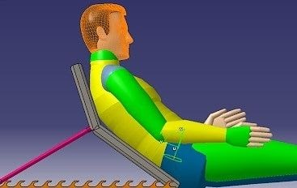
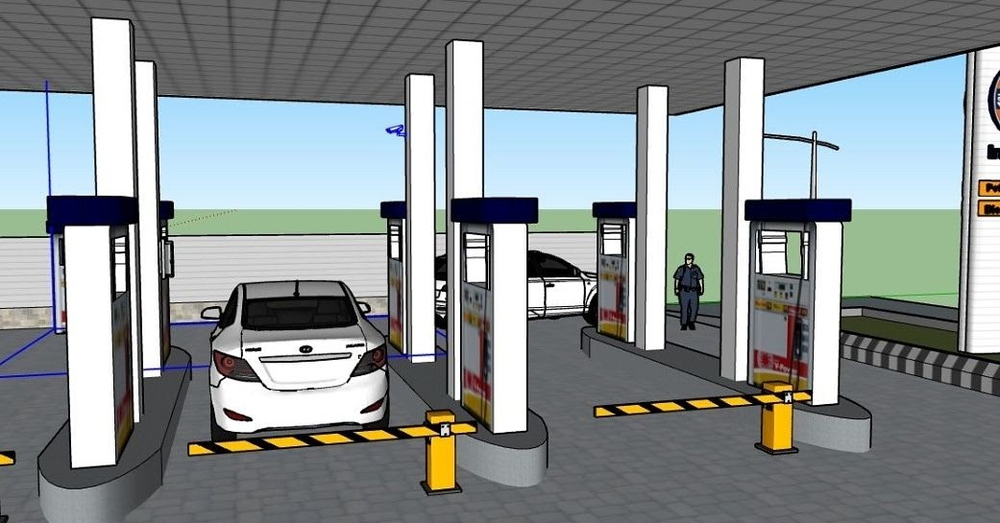
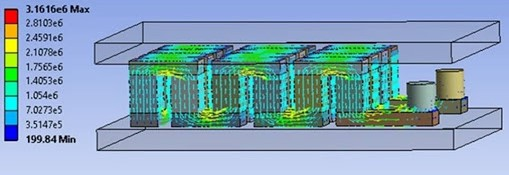
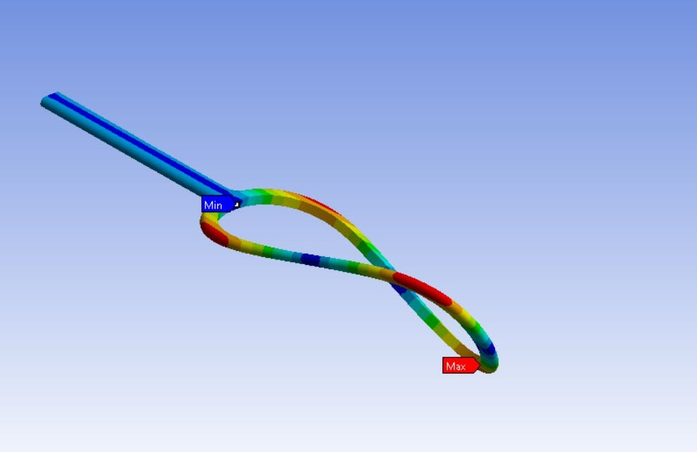
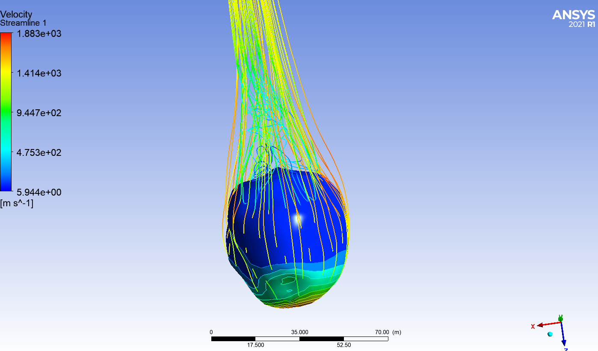

Research is the strong foundation upon which every successful academic institution is built. Here at SIME under the guidance of esteemed faculty members and professors with an avid group of students we are always working and looking to widen and deepen our interests and knowledge. Here are the Research Projects for 2020-2021.
Problem of Vegetable Sellers and Bangle Makers Solved!

This product design and prototyping project was led by the senior researcher Utkarsh.
He has designed an Ergonomic Ground Chair to solve the problem of small scale
industry workers who spend most of their work hours sitting on ground without
any structural support to their back.
The problem was identified and a very innovative design of ground chair was
developed that is economical, space efficient, mechanically stiff and most
importantly ergonomic. The product has been designed to support a wide
range of user anthropometry and software as well as paper analysis has been
properly carried out. As the name suggests, the chair can be put on the
ground and can be reclined as desired by the user.
There is a provision of adjusting the recline by using the easily operable
slot system on the lower frame. The product is still in it’s pre-prototyping
phase and will be manufactured once the COVID situation settles down.
Project Achievement :
Awarded second prize in Institute Innovation Contest 2020
that was organized by Institute Innovation Council (a Ministry of Education, GoI Initiative), BIT Mesra.
Fuel Retail Industry Problems Troubleshot by SIME Members

This project was led by Shivansh Goyal with his teammates Rumi Bharti
and Utkarsh at the Society for Industrial Management and Engineering.
The project was regarding the modification of fuel stations to make
the operation possible with minimal touchpoints in times of pandemic.
The calculations done in the project show that the operation will become
cost-efficient under 3 years of the initiation. Apart from this, the team
also brought a very interesting solution for fulfilling the power demand of Electric Vehicle Fuel Station by using
renewable energy sources like wind and solar energy. The team developed the concept of a hybrid model that exploits
the energy from both wind and solar sources. They developed a robust Business
for both their solutions after proper market study and customer survey.
Project Achievement :
Awarded second prize in Campus Innovathon 2020 that was
organized by Gilbarco Veeder Root, India that saw
participation in thousands from all over the country.
Shivansh Goyal was also awarded with the title of
‘The Best Presenter’ in this competition.
Groundbreaking Innovation in Automobile Energy Recovery System

This project was led by Ishan Kashyap - a senior researcher
at the society. The project is regarding the recovery and
utilization of waste heat energy from an IC Engine equipped
Automobile. About 60% of total energy of fuel is lost in
form of heat and the project aims to create an effective
system which can recover almost 50%-60% of that lost heat
energy and store it in form of electrical energy in
batteries which can be used to power other systems such
as AC, lights etc, this method when merged with
Kinetic energy recovery system can be utilized in
Hybrid Vehicles and could increase the range of a
hybrid vehicle by almost 40%.
Project Achievement :
Published in Weentech Proceedings in Energy (2021), Page 11-23, International
conference on Innovative Development and Engineering Applications
Tennis Racket Design Being Re-Engineered!

A team of senior researchers at SIME, BIT Mesra are analysing the
vibrational aspect of tennis racket design. Rackets are subjected
to a very high variation in impact load, angle of strike, velocity
and more which makes it a very interesting component to analyse
and optimize it's design that shall be stiff, light and should
provide an exceptional 'feel' to the player. In the picture,
you see one of the modal shapes of a fundamental model of tennis
racket design. Based on the analysis, design will be further
modified and correlation between various factors and racket behaviour will be worked upon.
Engineering behind a Falling Asteroid Analyzed

This short project was completed by a team of senior researchers
at SIME. The project focuses on the analysis of an asteroid entering
our atmosphere using various factors such as temperature distribution,
pressure distribution, velocity analysis and density variation.
Such analysis can help in analysing the true mass, volume an
speed of the asteroid with which it entered the planet's atmosphere.
Lean Six Sigma Analysis of a Call Center
Machine Learning techniques were used by a team of senior researchers
at society to analyze the behaviour of customers calling to a call
center based on the time duration of call. This was part of a lean
six sigma project in which they were trying to understand the
underlying root cause behind the falling rating of a call center
(data provided by Institute of Business and Industrial Statistics
of the University of Amsterdam). They found out a correlation of 0.7 between
the time duration of call and whether a customer hung up the call
in between or the problem was solved. The analysis suggested that
call duration needs to be further analyzed and employees should be
trained to conclude the call in a certain time frame.